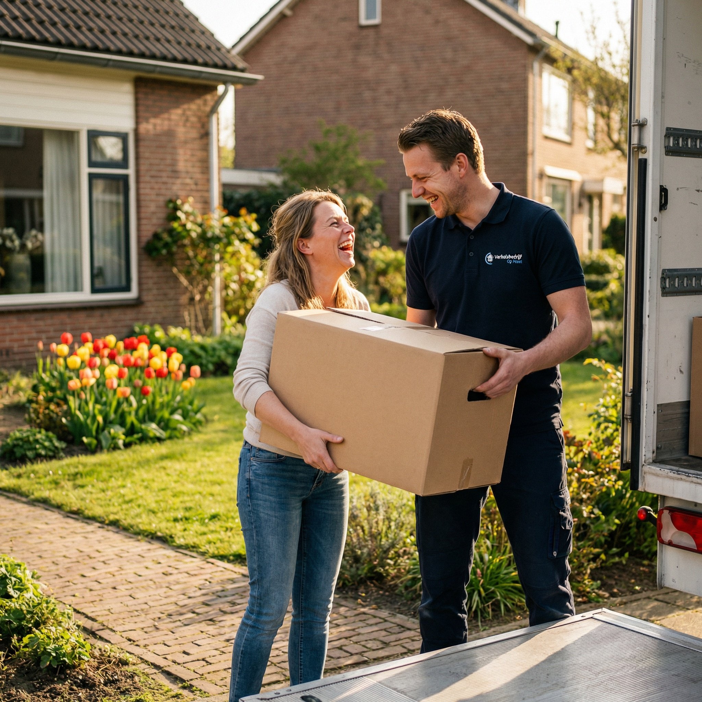
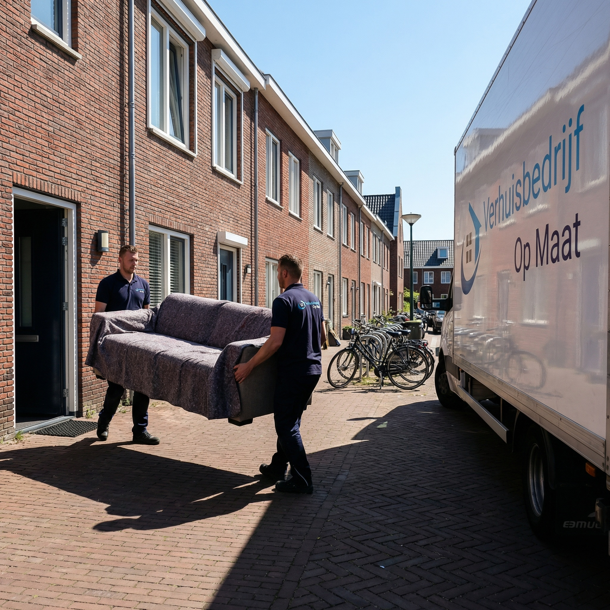
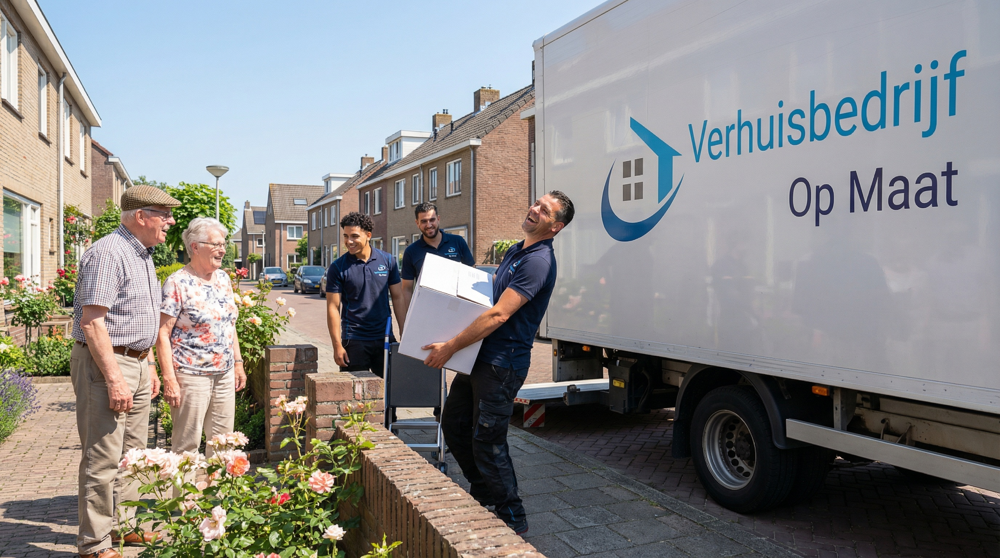
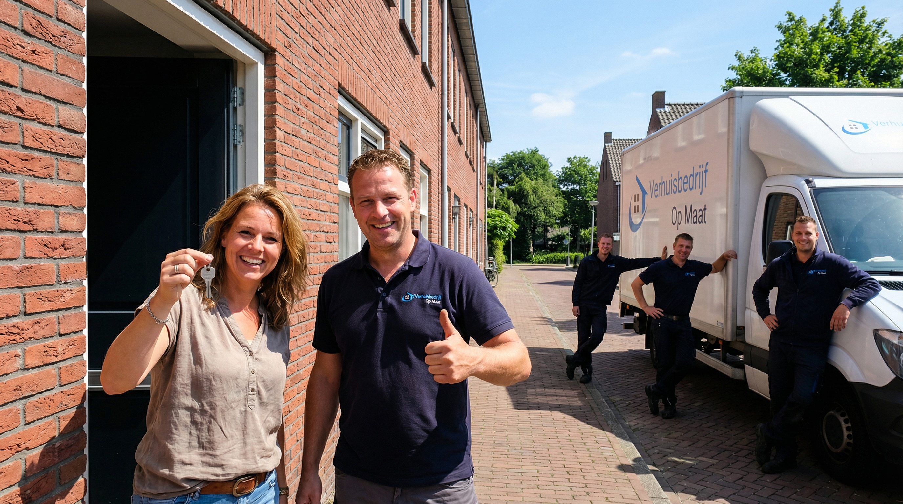
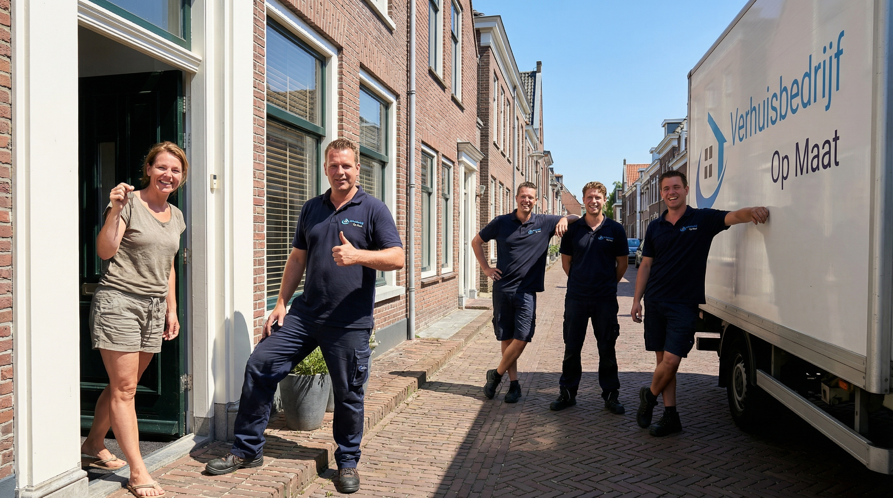
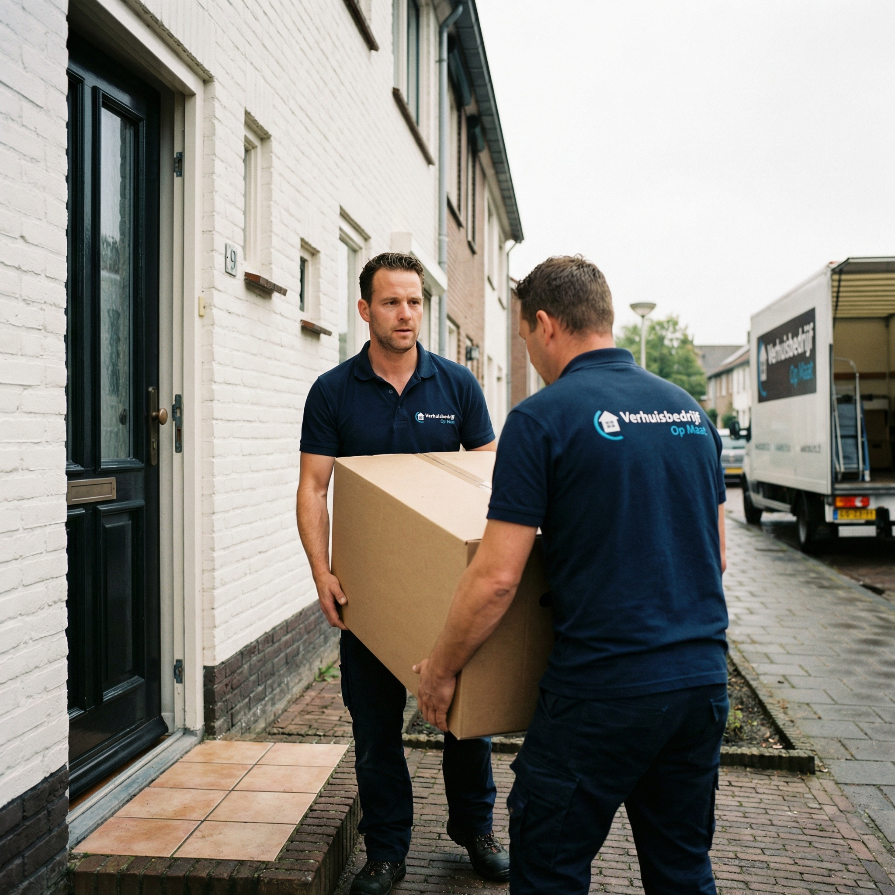
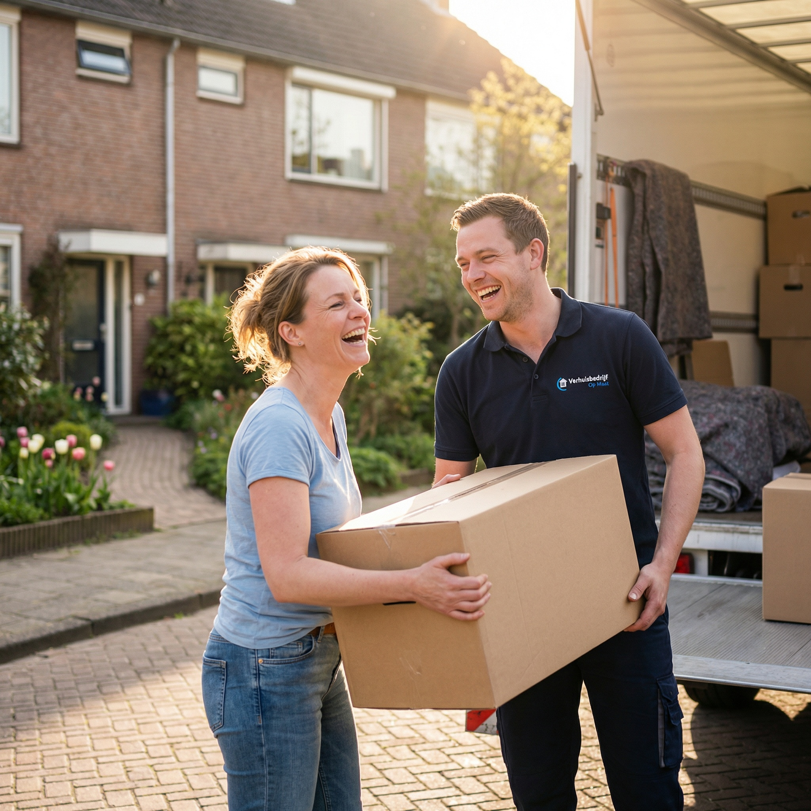

Verhuisbedrijf Wassenaar
Specialist in villa- en seniorenverhuizingen in Wassenaar
Geen verplichtingen · Reactie binnen 2 uur

Verhuizen met zorg in een van de mooiste gemeenten van Nederland
Wassenaar is een van de meest gewilde woonplaatsen van Nederland. Bekend om zijn groene karakter, ruime villa's en landelijke uitstraling, trekt Wassenaar bewoners aan die waarde hechten aan rust, ruimte en kwaliteit. Verhuisbedrijf Op Maat begrijpt de unieke eisen die een verhuizing in Wassenaar stelt. Al meer dan 20 jaar verzorgen wij verhuizingen in deze gemeente, van statige villa's op ruime kavels tot karakteristieke woningen in het dorpscentrum.
Onze verhuizers zijn getraind in het omgaan met grote inboedels, waardevolle meubels en kwetsbare kunstvoorwerpen. Wij weten dat een verhuizing in Wassenaar meer vraagt dan alleen het verplaatsen van dozen. Het gaat om vertrouwen, zorgvuldigheid en een persoonlijke aanpak. Als volledig verhuisbedrijf bieden wij zowel particuliere verhuizingen als bedrijfsverhuizingen op het hoogste niveau.
- Specialist in villaverhuizingen en grote inboedels
- Ervaren team met oog voor detail en kwaliteit
- Persoonlijke aanpak afgestemd op uw wensen
Uw Wassenaarse verhuizing in vertrouwde handen
Ontdek waarom meer dan 1.000 klanten ons een 9+ beoordeling geven
Ervaren verhuizers
Al meer dan 20 jaar vakmanschap in het veilig verhuizen van grote en waardevolle inboedels.
All-in prijzen
Transparante tarieven zonder verborgen kosten of onverwachte toeslagen.
Snel en flexibel
Wij plannen uw verhuizing volledig op uw schema en tempo.
Gratis materialen
Verhuisdozen, dekens en tape zijn bij onze service inbegrepen.
Vaste verhuizers, 20+ jaar ervaring
Gecertificeerde verhuizers die met zorg en respect te werk gaan.
9+ beoordeling
Meer dan 1.000 tevreden klanten geven ons een uitstekende score.

Grote woningen en ruime kavels vragen om ervaren verhuizers
Wassenaar staat bekend om zijn imposante villa's, herenhuizen en landgoederen op ruime kavels. Een verhuizing vanuit of naar een dergelijke woning vraagt om een andere aanpak dan een standaard verhuizing. De inboedels zijn vaak groter, zwaarder en waardevoller. Denk aan antieke meubels, kunstcollecties, vleugelpiano's en maatwerkkasten die niet zomaar door een standaard deuropening passen.
Ons team heeft ruime ervaring met villaverhuizingen in Wassenaar. Wij zetten een groter verhuisteam in (meestal 4-6 verhuizers), gebruiken twee of meer verhuiswagens en plannen de verhuizing tot in het kleinste detail. Elk meubel wordt individueel beschermd met professionele verhuisdekens en krimpfolie. Vloeren, deurposten en traptreden worden afgedekt om schade aan uw woning te voorkomen. Bij ons is niets aan het toeval overgelaten.
- Groot verhuisteam voor omvangrijke villaverhuizingen
- Professionele bescherming van vloeren en deurposten
- Individuele verpakking van waardevolle meubels en kunst

Verhuizen op latere leeftijd met extra aandacht en geduld
Wassenaar kent een aanzienlijke groep senioren die na jarenlang woongenot in hun ruime villa of eengezinswoning de stap maken naar een kleiner appartement, aanleunwoning of zorginstelling. Wij begrijpen dat deze overgang niet alleen praktisch, maar ook emotioneel beladen kan zijn. Onze seniorenverhuizing is speciaal ontwikkeld voor deze situatie.
Bij een seniorenverhuizing nemen wij extra tijd. Onze verhuizers werken in een rustiger tempo, nemen de tijd voor uitleg en zorgen ervoor dat de nieuwe woning helemaal is ingericht voordat zij vertrekken. Desgewenst helpen wij met het uitpakken van dozen, het ophangen van schilderijen en het plaatsen van meubels op de gewenste plek. U hoeft zich nergens zorgen over te maken; wij regelen alles van A tot Z.
- Persoonlijke begeleiding gedurende de hele verhuizing
- Rustiger tempo en extra geduld
- Hulp bij inrichten van de nieuwe woning
- Uitpakken, plaatsen en opruimen inbegrepen
Verhuizing in Wassenaar gepland? Wij regelen het voor u!
Ontvang binnen 24 uur een vrijblijvende offerte op maat, zonder verborgen kosten.
Geen verplichtingen · Reactie binnen 2 uur
- ✓ Gratis taxatie
- ✓ All-in prijzen
- ✓ 20+ jaar ervaring
Zo verloopt uw verhuizing in Wassenaar
Contact
Neem contact op voor een vrijblijvend adviesgesprek over uw verhuizing in Wassenaar
Taxatie
Gratis inventarisatie bij u thuis, inclusief beoordeling van bijzondere items
Planning
Wij plannen uw verhuisdag tot in detail, afgestemd op uw woningtype
Verhuisdag
Ons team verhuist u zorgvuldig, met maximale bescherming van uw inboedel
Nazorg
Uitpakken, inrichten en gratis ophalen van verhuismateriaal

Van Oud-Wassenaar tot Rust en Vreugd: wij kennen elke buurt
Wassenaar bestaat uit diverse gebieden, elk met een eigen sfeer en woningtype. In Oud-Wassenaar vindt u de meest exclusieve villa's en landgoederen, vaak verscholen achter hoge hagen op grote kavels. Het gebied rondom Duinrell kenmerkt zich door ruime vrijstaande woningen in een bosrijke omgeving. De Kieviet is een geliefde woonwijk met een mix van twee-onder-een-kapwoningen en vrijstaande huizen.
In Rijksdorp treft u zowel oudere als nieuwere woningen, terwijl Rust en Vreugd dicht bij het centrum ligt en een gevarieerd woningaanbod biedt. Wij kennen de specifieke uitdagingen van elke wijk, van smalle opritten bij landgoederen tot het manoeuvreren met grote verhuiswagens door lanen met bomen. Onze ervaring in Wassenaar zorgt ervoor dat uw verhuizing soepel en zonder verrassingen verloopt.
- Actief in alle wijken: Oud-Wassenaar, Duinrell-omgeving, De Kieviet
- Ervaring met Rijksdorp en Rust en Vreugd
- Kennis van lokale omstandigheden en toegangswegen

Professionele bescherming van uw kostbare bezittingen
In Wassenaar treffen wij regelmatig inboedels aan met bijzondere waarde: antieke meubels, kunstcollecties, designmeubilair, kristal en zilverwerk. Het veilig verplaatsen van deze items vereist kennis, ervaring en het juiste materiaal. Onze verhuizers zijn getraind in het behandelen van kostbare en kwetsbare voorwerpen.
Wij gebruiken speciale verpakkingsmaterialen voor waardevolle items: schuimfolie voor breekbare voorwerpen, kunstkratten voor schilderijen en beelden, en op maat gemaakte bescherming voor meubels met bijzondere afwerkingen. Elk stuk wordt in de verhuiswagen gezekerd met spanbanden om verschuiving tijdens transport te voorkomen. Uw inboedel is bovendien volledig verzekerd tijdens de verhuizing, zodat u met een gerust hart kunt verhuizen.
- Speciale verpakking voor antiek, kunst en design
- Kunstkratten en schuimfolie voor breekbare items
- Volledige verzekering tijdens transport
- Getrainde verhuizers voor kostbare inboedels

Meer dan alleen verhuizen in Wassenaar
Naast reguliere verhuizingen bieden wij in Wassenaar diverse aanvullende diensten. Heeft u tijdelijk geen plek voor (een deel van) uw inboedel? Onze beveiligde opslagloods biedt een veilige tussenoplossing, ideaal bij een verbouwing of wanneer uw nieuwe woning nog niet beschikbaar is. De opslag is droog, schoon en 24/7 beveiligd.
Moet u onverwacht snel verhuizen? Met onze spoedverhuizing staan wij binnen 24 uur klaar. Wij verzorgen ook professionele woningontruimingen in Wassenaar en omgeving, bijvoorbeeld bij een nalatenschap of verkoop. Neem contact op voor een vrijblijvend adviesgesprek over de mogelijkheden.
- Beveiligde opslag voor tijdelijke tussenoplossing
- Spoedverhuizingen binnen 24 uur beschikbaar
- Professionele woningontruimingen
- Landelijk karakter van Wassenaar: wij kennen de wegen
Wat onze klanten zeggen
Meer dan 1000 tevreden klanten gingen u voor.
"Perfect en snelle service. Communicatie uitstekend en gaan heel zorgvuldig en netjes om met je spullen. TOP BEDRIJF EN TOP TEAM!!!"
"Hele fijne contact gehad met Ricardo. Vanaf het eerste telefoontje tot aan de laatste meubel die netjes en geseald werd gebracht. Zeker aanraders!"
"Wat een goede service! Begon al met het eerste contact via Ricardo, echt een vriendelijke kerel. Benny en Ibrahim zijn harde werkers. De service is echt super!"
"Ik kan dit verhuisbedrijf van harte aanbevelen! De verhuizers werkten zeer hard en gingen met de grootste zorg om met onze spullen."
"Perfect verhuisbedrijf! Heel professioneel, klantgericht en vriendelijk! Ik heb alleen maar positieve ervaringen!"
"De verhuizing werd volledig verzorgd. Drie verhuizers werkten ontzettend hard en alles zonder beschadigingen. Kwetsbare spullen werden netjes geseald."
Alles over verhuizen in Wassenaar
Wat kost een verhuizing in Wassenaar?
De kosten van een verhuizing in Wassenaar hangen af van het volume (m3), het type woning, de afstand naar het nieuwe adres en eventuele extra diensten. Wassenaar kent veel grote woningen en villa's, waardoor verhuizingen hier gemiddeld omvangrijker zijn. Na een gratis taxatie bij u thuis ontvangt u een all-in offerte zonder verborgen kosten. Bekijk onze tarievenpagina voor een indicatie.
Hoe verhuizen jullie een grote villa in Wassenaar?
Voor villaverhuizingen in Wassenaar zetten wij een groter team in, meestal 4-6 verhuizers met twee verhuiswagens. Wij plannen de verhuizing tot in detail, inclusief de- en montage van grote meubels, het veilig inpakken van waardevolle items en het beschermen van vloeren en deurposten. Onze ervaren taxateur maakt vooraf een uitgebreide inventarisatie.
Hoe beschermen jullie waardevolle inboedel tijdens de verhuizing?
Wij beschermen waardevolle meubels, kunst en antiek met professionele verhuisdekens, krimpfolie, schuimfolie en speciale kunstkratten. Elk item wordt individueel ingepakt en gezekerd in de verhuiswagen. Onze verhuizers zijn getraind in het omgaan met kostbare en kwetsbare items.
Verzorgen jullie ook seniorenverhuizingen in Wassenaar?
Ja, wij verzorgen regelmatig seniorenverhuizingen in Wassenaar. Onze seniorenverhuizing omvat persoonlijke begeleiding, extra geduld en desgewenst hulp bij het inrichten van de nieuwe woning. Wij begrijpen dat verhuizen op latere leeftijd emotioneel kan zijn en stemmen ons tempo hierop af.
Bieden jullie ook opslagmogelijkheden aan?
Ja, wij beschikken over een beveiligde, droge en schone opslagloods in de regio. Ideaal als uw nieuwe woning nog niet beschikbaar is of als u tijdelijk minder ruimte heeft. De opslag is 24/7 beveiligd en klimaatbestendig. Bekijk onze opslagpagina voor meer informatie.
Hoe snel kan ik een verhuizing in Wassenaar inplannen?
Wij adviseren om minimaal 2-4 weken van tevoren te boeken, zodat wij de verhuizing goed kunnen plannen en voorbereiden. Heeft u het urgenter nodig? Met onze spoedverhuizing staan wij binnen 24 uur klaar. Neem contact op voor de mogelijkheden.
Gerelateerde diensten
Naast verhuizingen in Wassenaar helpen wij u ook met deze diensten
Seniorenverhuizing
Verhuizen met extra geduld en persoonlijke begeleiding. Van inpakken tot inrichten in de nieuwe woning.
Meer informatie →Opslag
Tijdelijke opslag nodig tussen twee woningen? Onze beveiligde loods in Wateringen staat klaar.
Meer informatie →Particuliere verhuizing
Compleet verzorgde particuliere verhuizing met gratis verhuisdozen en all-in prijzen.
Meer informatie →Gratis offerte aanvragen
Vul het formulier in en ontvang binnen 24 uur een vrijblijvende offerte voor uw verhuizing in Wassenaar.
Bedankt voor uw aanvraag!
Wij hebben uw aanvraag in goede orde ontvangen. Binnen 24 uur nemen wij contact met u op.
